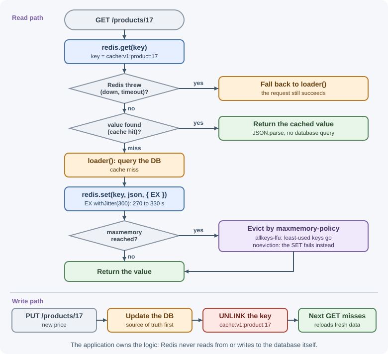
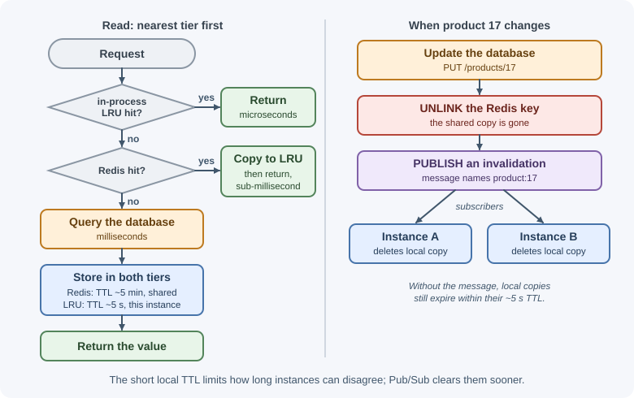

Using Redis as a Cache¶
Caching is one of the most common reasons teams add Redis. The application keeps the results of expensive work (database queries, API calls, rendered fragments) in Redis for a while, so later requests are answered from memory. This lesson shows how to implement cache-aside in Node.js and how to configure keys, expiry, memory limits, and monitoring so the cache stays fast and correct.
Why it matters¶
An in-process cache (a Map in Node) disappears on restart and is not shared
between instances, so each of ten servers warms its own copy and they
disagree after updates. Redis gives every instance one shared cache that
survives application deploys, with built-in expiry and eviction. Done badly,
though, a cache serves stale data, fills memory, or collapses under a
stampede of misses. The general theory is in
cache fundamentals and
caching strategies; this lesson covers
the Redis specifics.
Real-world usage¶
- GitLab uses Redis as the store behind its Rails cache (
Rails.cache), alongside queues, sessions, and other state, and runs separate Redis instances on GitLab.com so each workload can be sized and tuned on its own (GitLab: Redis guidelines). - Mastodon uses Redis for volatile caching as well as for feeds and
queues. Its scaling guide suggests a separate Redis just for the cache
(
CACHE_REDIS_URL), because the cache can be lost safely while the feeds and Sidekiq queues are data you would not want to lose (Mastodon: Scaling up your server).
Both follow the same rule this lesson repeats: a cache's eviction and persistence settings differ from those of must-keep data, so they live on different instances.
Popular tools and providers: managed Redis-compatible caches such as Amazon ElastiCache (Valkey, Memcached, or Redis OSS engines) and Google Cloud Memorystore for Redis.
How it works¶
Cache-aside with Redis¶
In cache-aside (lazy loading), the application talks to both the cache and the database:

Writes go to the database first; the cached copy is then deleted (or updated), so the next read reloads fresh data. Redis never talks to the database itself: the application owns the logic.
TTLs and jitter¶
Every cache entry should have a TTL, even when you also invalidate on writes. The TTL bounds how stale data can get if an invalidation is missed, and lets unused entries disappear.
If many keys are created at the same moment with the same TTL (for example after a deploy or a cache flush), they also expire together, and the database receives a burst of misses. Adding jitter (a small random amount) spreads expirations out: a base TTL of 300 seconds becomes 270–330.
Other TTL-related commands:
GETEX key EX 300reads a value and resets its TTL (sliding expiry).SET key value KEEPTTLreplaces a value but keeps the existing TTL.
Serialization¶
Redis stores strings or bytes, so objects must be serialized:
| Format | Pros | Cons |
|---|---|---|
| JSON | Readable in redis-cli, works everywhere |
Larger; Date objects become strings |
| MessagePack or similar binary formats | Smaller, faster | Not human-readable; both sides need the library |
| Compressed JSON (gzip/Brotli) | Much smaller for large values | CPU cost; unreadable |
| Hash fields | Read or update single fields | Flat structure only |
Include a version in the key (cache:v2:...) so that changing the cached
shape does not make new code read old-format values.
Key design¶
A cache key must include every input that changes the result:
| Cached result | Key |
|---|---|
| Product 17 | cache:v1:product:17 |
| Product 17 in French | cache:v1:product:17:fr |
| Search results | cache:v1:search:<sha1 of normalized query and filters> |
| A user's dashboard | cache:v1:dashboard:user:42 |
If a key omits an input, such as the user's role or language, one user can receive another user's data. Normalize inputs (sort query parameters, lowercase) so equivalent requests share a key, and hash long inputs to keep keys short.
Memory limits and eviction¶
maxmemory caps how much memory Redis uses for data. When the limit is
reached, maxmemory-policy decides what happens on the next write:
| Policy | Behavior |
|---|---|
noeviction |
Reject writes with an out-of-memory error (common default) |
allkeys-lru |
Evict the least recently used keys |
allkeys-lfu |
Evict the least frequently used keys |
volatile-lru / volatile-lfu |
Same, but only keys that have a TTL |
volatile-ttl |
Evict keys with the shortest remaining TTL first |
allkeys-random / volatile-random |
Evict random keys |
allkeys-lrm / volatile-lrm |
Evict the least recently modified keys (listed in current Redis docs; check your server version) |
For a dedicated cache, allkeys-lru or allkeys-lfu is the usual choice.
If the same Redis also stores data that must not disappear (sessions,
queues), run separate Redis instances for cache and for durable state. A
volatile-* policy only spares keys that have no TTL: sessions normally
carry a TTL, so they would still be evicted, and queue libraries such as
BullMQ require noeviction.
Redis's LRU and LFU are approximations based on sampling, which is fast
and close to exact in practice. The policies are explained in depth in
eviction policies.
Big keys¶
A big key is a single value or collection that is very large: a 50 MB string, or a hash with millions of fields. Big keys cause:
- Latency spikes, because reading, writing, or deleting them blocks the single command thread.
- Network saturation when the whole value is sent on each read.
- Uneven memory in a cluster, because one key always lives on one node.
Find them with redis-cli --bigkeys or --memkeys (sampled scans that are
safe to run) and MEMORY USAGE key. Fix them by caching smaller pieces,
storing only the fields a page needs, splitting collections across keys,
compressing, and deleting big values with UNLINK.
Invalidation¶
The hard part of caching is keeping it correct after data changes. Common Redis approaches:
- Delete on write: after updating the database,
DEL(orUNLINK) the affected keys; the next read repopulates them. - TTL as a safety net: even if an invalidation is lost, data is fresh within one TTL.
- Versioned keys: store a version number (
product:17:version) and include it in cache keys; incrementing it makes all old entries unreachable, and their TTLs clean them up. - Broadcast for local caches: publish an invalidation message on Pub/Sub so every instance clears its in-process copy.
Delete rather than update the cache on writes: two concurrent writers that both update the cache can leave the older value there. See invalidation and expiration.
Stampedes and outages¶
When a popular key expires, hundreds of concurrent requests can miss at
once and all hit the database (a cache stampede). Defenses include
jittered TTLs, letting only one request rebuild the value (a short lock
with SET lock:key token NX PX 5000), and refreshing hot keys before they
expire. If Redis itself is down, the application should fall back to the
database with timeouts and limits rather than crash, and must not overwhelm
the database. These failure modes are covered in
cache failure modes.
Two-tier caching¶
For extremely hot data, add a small in-process cache in front of Redis:

The local tier removes network round trips for the hottest keys; its short TTL limits how long instances can disagree. Invalidation messages over Pub/Sub can clear local copies sooner.
Measuring hit rate¶
A cache that misses most of the time adds latency and cost. Redis tracks
reads that found a key (keyspace_hits) and reads that did not
(keyspace_misses):
hit rate = keyspace_hits / (keyspace_hits + keyspace_misses)
These counters are server-wide and include every read, not only cache
lookups, so application-level metrics per key prefix give a more precise
picture. Also watch evicted_keys (memory pressure) and expired_keys.
See monitoring and logging.
When to use and when not to use¶
Use a Redis cache when:
- The same expensive result (a query, an API call, a rendered fragment) is read many times before it changes.
- Several application instances should share one warm cache.
- Serving data that is up to one TTL old is acceptable, or you can invalidate reliably on writes.
Skip it, or cache somewhere else, when:
- Every read must see the latest committed write (account balances, inventory at checkout); read from the database.
- Data is written more often than it is read, so entries are invalidated before they are reused.
- The hit rate stays low because keys are too specific or values change constantly.
- The data is small and per-process: an in-process LRU is faster and simpler.
| Option | Shared across instances | Speed | Invalidation | Best for |
|---|---|---|---|---|
| In-process LRU | No | Fastest (no network) | Per instance; short TTLs | The hottest few keys |
| Redis cache-aside | Yes | Sub-millisecond on the server, plus a network round trip | DEL/UNLINK on write, TTL as a backstop |
Shared query and API results |
| HTTP cache or CDN | Yes, at the edge | Fastest for clients | Cache-Control, purges |
Public, cacheable responses |
| Database read replica | Yes | Database speed | None needed; replication lag applies | Fresh reads at lower cost than the primary |
Practical examples¶
Configuring memory and eviction¶
127.0.0.1:6379> CONFIG GET maxmemory-policy
1) "maxmemory-policy"
2) "noeviction"
127.0.0.1:6379> CONFIG SET maxmemory 2gb
OK
127.0.0.1:6379> CONFIG SET maxmemory-policy allkeys-lfu
OK
CONFIG SET changes the running server only; put the same settings in
redis.conf (or your managed service's parameter group) so they survive a
restart:
maxmemory 2gb
maxmemory-policy allkeys-lfu
A cache-aside helper in Node.js¶
import { createClient } from "redis";
export const redis = createClient({
url: process.env.REDIS_URL,
socket: { connectTimeout: 2000 },
disableOfflineQueue: true, // fail fast instead of queueing while disconnected
});
redis.on("error", (err) => console.error("Redis error", err.message));
await redis.connect();
function withJitter(seconds, ratio = 0.1) {
const spread = seconds * ratio;
return Math.round(seconds - spread + Math.random() * spread * 2);
}
/**
* Return a cached value, or load it, cache it, and return it.
* A Redis failure falls back to the loader instead of failing the request.
*/
export async function getOrLoad(key, ttlSeconds, loader) {
try {
const cached = await redis.get(key);
if (cached !== null) return JSON.parse(cached);
} catch (err) {
console.warn("cache read failed, using database", err.message);
return loader();
}
const value = await loader();
if (value !== undefined) {
redis
.set(key, JSON.stringify(value), { EX: withJitter(ttlSeconds) })
.catch((err) => console.warn("cache write failed", err.message));
}
return value;
}
Using it in an Express route:
app.get("/products/:id", async (req, res) => {
const id = req.params.id;
const product = await getOrLoad(`cache:v1:product:${id}`, 300, () =>
db.products.findById(id)
);
if (!product) return res.status(404).json({ error: "Product not found" });
res.json(product);
});
loader returns null for a missing product, which is cached too. This is
negative caching: it stops repeated requests for nonexistent IDs from
hitting the database. Use a shorter TTL for negative entries if records can
be created later.
Invalidating on write¶
app.put("/products/:id", async (req, res) => {
const updated = await db.products.update(req.params.id, req.body);
// Delete after the database write succeeds; the next read reloads.
await redis.unlink([`cache:v1:product:${req.params.id}`,
`cache:v1:product:${req.params.id}:fr`]);
res.json(updated);
});
Preventing a stampede on one hot key¶
import { randomUUID } from "node:crypto";
export async function getOrLoadOnce(key, ttlSeconds, loader) {
const cached = await redis.get(key);
if (cached !== null) return JSON.parse(cached);
const token = randomUUID();
const gotLock = await redis.set(`lock:${key}`, token, { NX: true, PX: 5000 });
if (!gotLock) {
// Someone else is rebuilding: wait briefly, then read again.
await new Promise((resolve) => setTimeout(resolve, 100));
const retry = await redis.get(key);
if (retry !== null) return JSON.parse(retry);
return loader(); // still nothing: load without caching
}
const value = await loader();
if (value !== undefined) {
await redis.set(key, JSON.stringify(value), { EX: withJitter(ttlSeconds) });
}
return value; // lock expires on its own after 5 seconds
}
Checking hit rate, evictions, and big keys¶
127.0.0.1:6379> INFO stats
# Stats
...
expired_keys:55310
evicted_keys:120
keyspace_hits:982341
keyspace_misses:41230
...
127.0.0.1:6379> MEMORY USAGE cache:v1:product:17
(integer) 1584
Here the hit rate is 982341 / (982341 + 41230) ≈ 96%.
$ redis-cli --bigkeys
# Scanning the entire keyspace to find biggest keys ...
...
-------- summary -------
Biggest string found "cache:v1:report:2026" has 18874368 bytes
Biggest hash found "user:42" has 12 fields
An 18 MB cached report is a big key worth splitting or compressing.
Best practices¶
- Give every cache key a TTL, with jitter.
- Delete cache entries after database writes; do not update them in place from concurrent writers.
- Put all result-affecting inputs and a format version in the key.
- Set
maxmemoryand anallkeys-*eviction policy on cache instances. - Keep durable data (sessions, queues) on a separate instance from the
cache; a
volatile-*policy does not protect keys that carry TTLs. - Treat the cache as optional: time out quickly and fall back to the source.
- Watch hit rate, evictions, memory, and latency; investigate big keys.
- Cache what is expensive and read often, not everything.
In production¶
The database overloads when a hot key expires.
- Detect: database queries per second spike at the same moment as
keyspace_missesinINFO stats; the spike repeats on the key's TTL or right after a deploy orFLUSHALL. - Cause: a cache stampede: many requests miss together and all rebuild the same value, or many keys created together expire together.
- Fix: jitter TTLs, let one request rebuild with a short
SET lock:<key> <token> NX PXlock, and refresh the hottest keys before they expire.
Users are logged out or jobs disappear.
- Detect:
evicted_keysinINFO statsis above zero on an instance that also holds sessions or queues. - Cause: an
allkeys-*eviction policy on a shared instance evicts must-keep keys along with cache entries. - Fix: move the cache to its own instance. A
volatile-*policy is not a reliable fix: it still evicts sessions, which have TTLs.
Users see old data after an update.
- Detect: the database holds the new value while
GETon the cache key returns the old one;TTL keyshows how long it will survive. - Cause: an invalidation was skipped (a code path that writes without deleting), or a slow reader re-filled the cache with data it read before the write.
- Fix: delete after every write path, keep TTLs as a safety net, and use versioned keys for bulk changes.
A Redis outage makes the whole site slow.
- Detect: request latency rises to the client's timeout and logs show Redis connection errors.
- Cause: the application waits on Redis without a timeout, or queues commands while disconnected.
- Fix: set
socket.connectTimeout, usedisableOfflineQueueto fail fast, and fall back to the source asgetOrLoaddoes.
The cache costs memory but saves little.
- Detect: hit rate computed from
keyspace_hitsandkeyspace_misses(or better, per-prefix application metrics) stays low. - Cause: keys include inputs that rarely repeat, TTLs are too short, or evictions remove entries before reuse.
- Fix: normalize keys, cache coarser results, and size
maxmemoryto the working set.
Important terminology¶
- Cache-aside: The application reads the cache, loads from the source on a miss, and fills the cache.
- Cache hit / miss: The requested key was / was not found.
- TTL jitter: Randomizing expiry times to avoid synchronized expiry.
- Negative caching: Caching "not found" results.
- Eviction policy: The rule Redis uses to free memory at
maxmemory. - Big key: A key whose value is large enough to cause latency or memory problems.
- Cache stampede: Many concurrent misses for the same key overloading the source.
- Two-tier cache: An in-process cache in front of a shared cache.
Common mistakes and misconceptions¶
- No TTL "because we invalidate." A single missed invalidation leaves stale data forever.
noevictionon a cache. When memory fills, writes fail with out-of-memory errors instead of evicting old entries.- Mixing cache and must-keep data under
allkeys-lru. Sessions or jobs get evicted. - Keys missing an input (language, role, tenant). Users see each other's data.
- Letting a Redis outage crash the app. A cache should degrade gracefully.
- Caching huge values. Big keys block Redis and saturate the network.
- "A higher hit rate is always better." A high hit rate on stale or wrong data is still a bug; correctness comes first.
Revision questions¶
- Walk through a cache-aside read and a write with invalidation.
- Why add jitter to TTLs?
- Which eviction policy suits a dedicated cache, and why should durable data live elsewhere?
- What problems do big keys cause, and how do you find them?
- How do you calculate the cache hit rate from Redis statistics, and what are its limitations?
- When is a two-tier (local + Redis) cache worth the extra complexity?